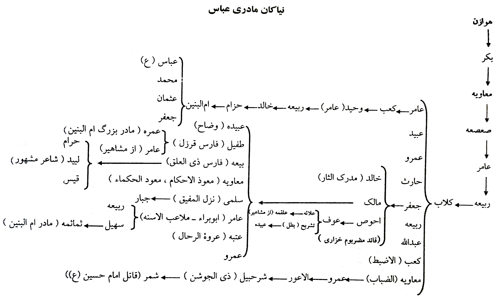
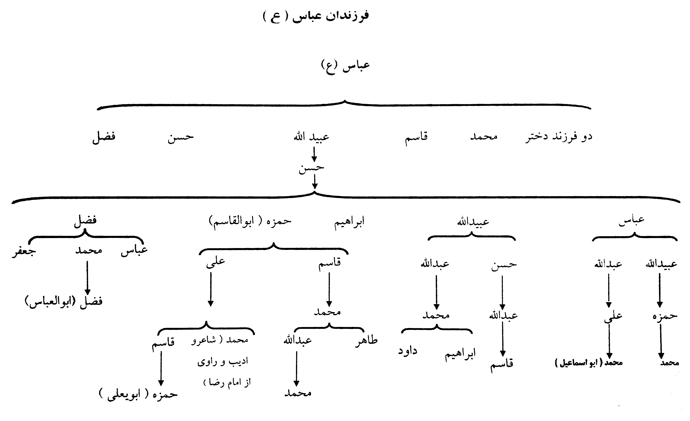

حضرت ابوالفضل در فرهنگ شیعه


کتاب های مربوطه
زندگانی قمر بنیهاشم
به قلم حسین بدرالدین، نشر مهتاب
ساقی خوبان
به قلم محمد چقایی اراکی، نشر مرتضی
علمدار کربلا
به قلم رضا دشتی، نشر موسسه پازینه
چهره درخشان قمر بنیهاشم
به قلم علی ربانی خلخالی، نشر مکتب الحسین
ابوالقربه
به قلم مجید زجاجی مجرد کاشانی، نشر سبحان
عباس(ع) سپهسالار کربلا
به قلم عباس شبگاهی شبستری، نشر حروفیه
عباس بن علی(ع)
به قلم جواد محدثی، انتشارات بوستان
ابوالفضل العباس (ع)
به قلم جواد خرمیان، نشر راه سبز